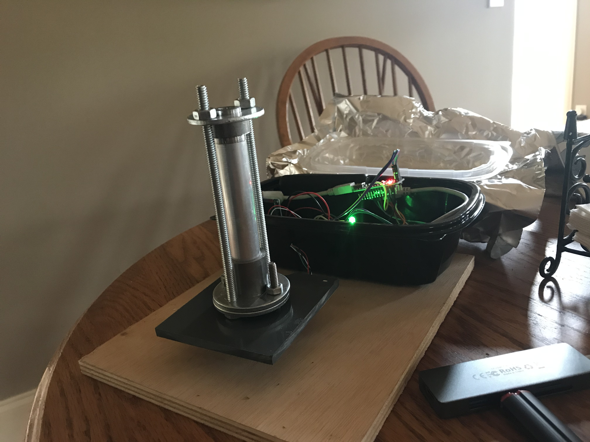
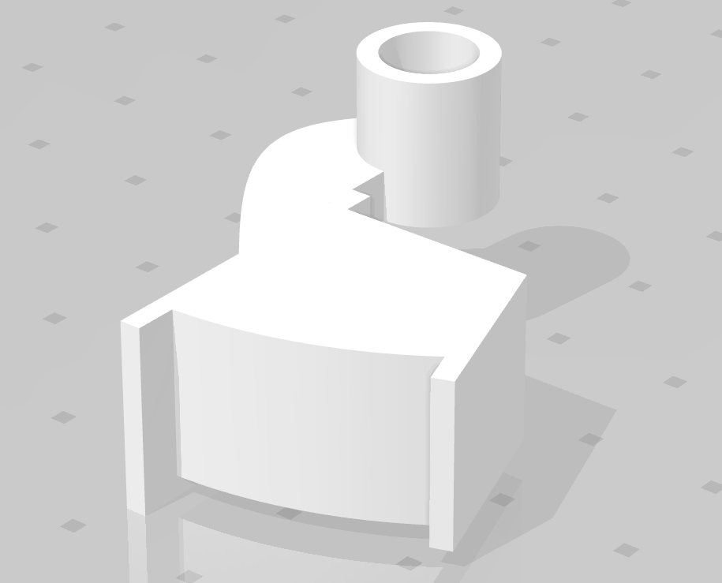
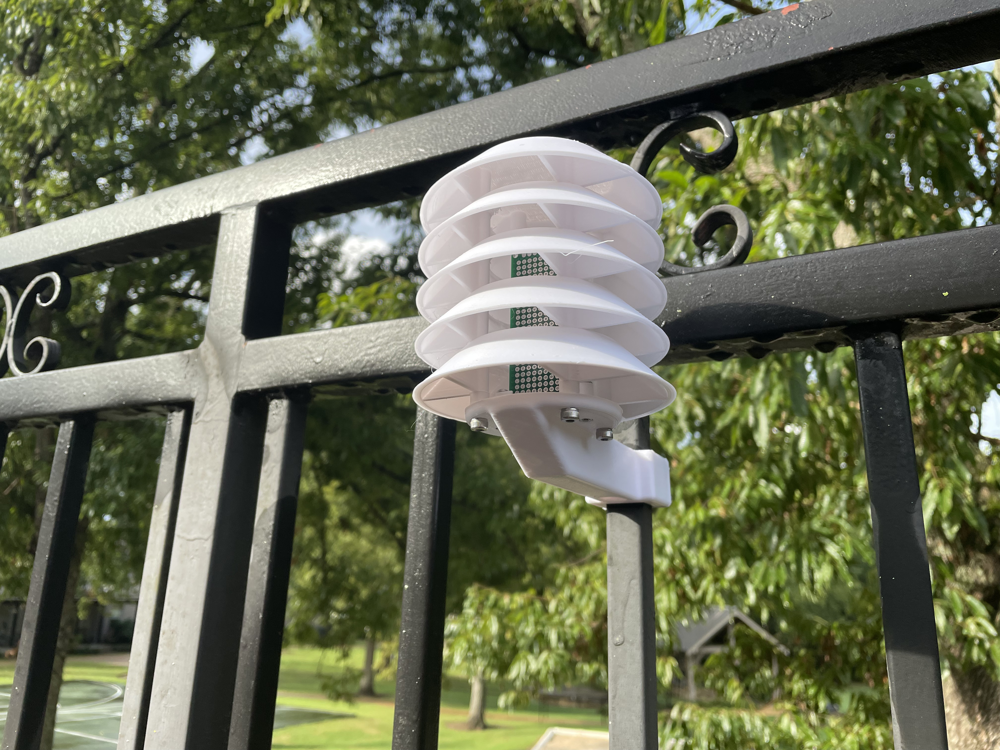
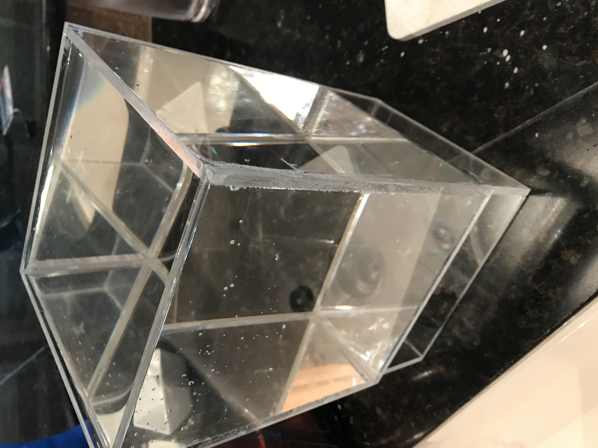
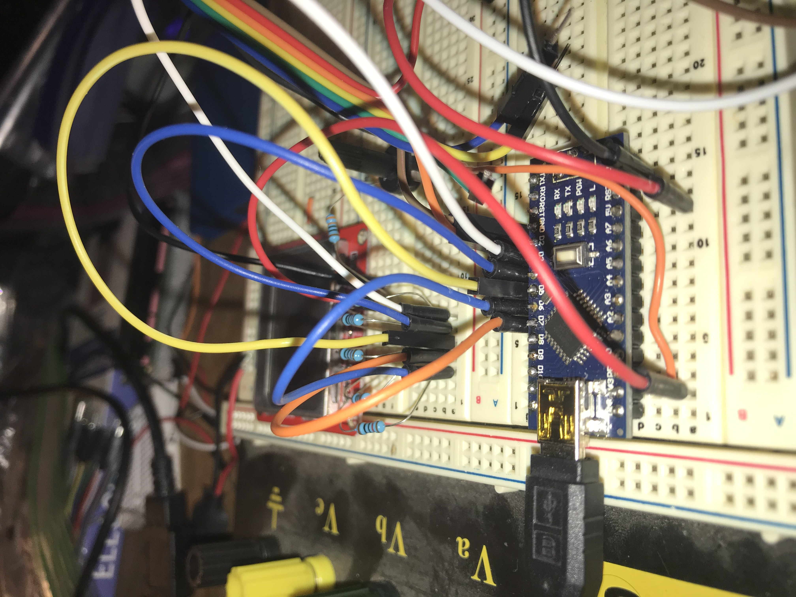

Home Air Quality Monitor
An indoor air quality monitoring system now in its third generation. What started with an ESP32, a particulate matter sensor, an eCO2 sensor, and a BME680 has grown into a family of monitors integrated with Home Assistant. Explore all three generations and how the design has evolved.


This Arduino project is still being worked on. It was finished, until I tested a new rocket motor design that decided to destroy itself. This is a DIY model rocket motor test stand using a load cell and sd card logging to test the efficacy of my homemade model rocket motors. While, the functionality is finished, I want to harden it against rocket motor tests gone wrong.

3D Models of the trigger and shaft for an Apollo AV-1 underwater scooter that can be conveniently 3D printed to replace a discontinued set of parts. This was used to repair a failing trigger assembly on a diving scooter that I use for scuba diving.

This upcoming project consists of a weather station that collects weather data outside and transmits the current weather to a display indoors.

This Arduino project is still a work in progress. It is a fully automatic plant watering system that will also hopefully look nice when complete.

This Arduino project is still a work in progress. It is a DIY tachometer for a converted CNC mill in the home shop utilizing a hall effect sensor and 3D printing. The functionality is complete, although the mill is not.